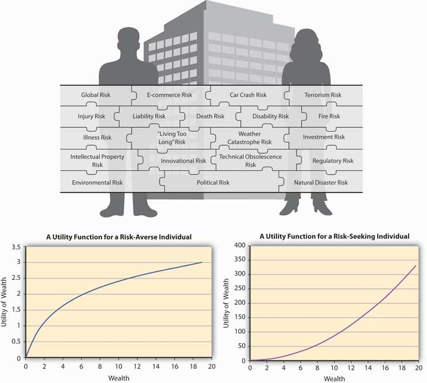

Authored by Puneet Prakash, Virginia Commonwealth University
Whenever we look into risks, risk measures, and risk management, we must always view these in a greater context. In this chapter, we focus on the risk within the “satisfaction” value maximization for individual and firms. The value here is measured economically. So, how do economists measure the value of satisfaction or happiness? Can we even measure satisfaction or happiness? Whatever the philosophical debate might be on the topic, economists have tried to measure the level of satisfaction.At one time, economists measured satisfaction in a unit called “utils” and discussed the highest number of utils as “bliss points”! What economists succeeded in doing is to compare levels of satisfaction an individual achieves when confronted with two or more choices. For example, we suppose that everyone likes to eat gourmet food at five-star hotels, drink French wine, vacation in exotic places, and drive luxury cars. For an economist, all these goods are assumed to provide satisfaction, some more than others. So while eating a meal at home gives us pleasure, eating exotic food at an upscale restaurant gives us an even higher level of satisfaction.
The problem with the quantity and quality of goods consumed is that we can find no common unit of measurement. That prevents economists from comparing levels of satisfaction from consumption of commodities that are different as apples are different from oranges. So does drinking tea give us the same type of satisfaction as eating cake? Or snorkeling as much as surfing?
To get around the problem of comparing values of satisfaction from noncomparable items, we express the value levels of satisfaction as a function of wealth. And indeed, we can understand intuitively that the level of wealth is linked directly to the quantity and quality of consumption a person can achieve. Notice the quality and level of consumption a person achieves is linked to the amount of wealth or to the individual’s budget. Economists consider that greater wealth can generate greater satisfaction. Therefore, a person with greater levels of wealth is deemed to be happier under the condition of everything else being equal between two individuals.Economists are fond of the phrase “ceteris paribus,” which means all else the same. We can only vary one component of human behavior at a time. We can link each person’s satisfaction level indirectly to that person’s wealth. The higher the person’s wealth, the greater his or her satisfaction level is likely to be.
Economists use the term “utils” to gauge a person’s satisfaction level. As a unit of measure, utils are similar to “ohms” as a measure of resistance in electrical engineering, except that utils cannot be measured with wires attached to a person’s head!
This notion that an individual derives satisfaction from wealth seems to work more often than not in economic situations. The economic theory that links the level of satisfaction to a person’s wealth level, and thus to consumption levels, is called utility theoryA theory postulated in economics to explain behavior of individuals based on the premise people can consistently rank order their choices depending upon their preferences.. Its basis revolves around individuals’ preferences, but we must use caution as we apply utility theory.The utility theory is utilized to compare two or more options. Thus, by its very nature, we refer to the utility theory as an “ordinal” theory, which rank orders choices, rather than “cardinal” utility, which has the ability to attach a number to even a single outcome where there are no choices involved.
In this chapter, we will study the utility theory. If utility theory is designed to measure satisfaction, and since every individual always tries to maximize satisfaction, it’s reasonable to expect (under utility theory) that each person tries to maximize his or her own utility.
Then we will extend utility to one of its logical extensions as applied to uncertain situations: expected utility (EU henceforth). So while utility theory deals with situations in which there is no uncertainty, the EU theory deals with choices individuals make when the outcomes they face are uncertain. As we shall see, if individuals maximize utility under certainty, they will also attempt to maximize EU under uncertainty.
However, individuals’ unabashed EU maximization is not always the case. Other models of human behavior describe behavior in which the observed choices of an individual vary with the decision rule to maximize EU. So why would a mother jump into a river to save her child, even if she does not know how to swim? Economists still confront these and other such questions. They have provided only limited answers to such questions thus far.
Hence, we will touch upon some uncertainty-laden situations wherein individuals’ observed behavior departs from the EU maximization principle. Systematic departures in behavior from the EU principle stem from “biases” that people exhibit, and we shall discuss some of these biases. Such rationales of observed behavior under uncertainty are termed “behavioral” explanations, rather than “rational” explanations—explanations that explore EU behavior of which economists are so fond.
In this chapter, we will apply the EU theory to individuals’ hedging decisions/purchase of insurance. Let’s start by asking, Why would anyone buy insurance? When most people face that question, they respond in one of three ways. One set says that insurance provides peace of mind (which we can equate to a level of satisfaction). Others respond more bluntly and argue that if it were not for regulation they’d never buy insurance. The second reply is one received mostly from younger adults. Still others posit that insurance is a “waste of money,” since they pay premiums up front and insurance never pays up in the absence of losses. To all those who argue based upon the third response, one might say, would they rather have a loss for the sake of recovering their premiums? We look to EU theory for some answers, and we will find that even if governments did not make purchase of insurance mandatory, the product would still have existed. Risk-averse individuals would always demand insurance for the peace of mind it confers.
Thus we will briefly touch upon the ways that insurance is useful, followed by a discussion of how some information problems affect the insurance industry more than any other industry. “Information asymmetry” problems arise, wherein one economic agent in a contract is better informed than the other party to the same contract. The study of information asymmetries has become a full-time occupation for some economics researchers. Notably, professors George A. Akerlof, A. Michael Spence, and Joseph E. Stiglitz were awarded the Nobel Prize in Economics in 2001 for their analyses of information asymmetry problems.
Preferences are not absolute but rather they depend upon market conditions, cultures, peer groups, and surrounding events. Individuals’ preferences nestle within these parameters. Therefore, we can never talk in absolute terms when we talk about satisfaction and preferences. The 2008 crisis, which continued into 2009, provides a good example of how people’s preferences can change very quickly. When people sat around in celebration of 2009 New Year’s Eve, conversation centered on hopes for “making a living” and having some means for income. These same people talked about trips around the world at the end of 2007. Happiness and preferences are a dynamic topic depending upon individuals’ stage of life and economic states of the world. Under each new condition, new preferences arise that fall under the static utility theory discussed below. Economists have researched “happiness,” and continuing study is very important to economists.An academic example is the following study: Yew-Kwang Ng, “A Case for Happiness, Cardinalism, and Interpersonal Comparability,” Economic Journal 107 (1997): 1848–58. She contends that “modern economists are strongly biased in favour of preference (in contrast to happiness), ordinalism, and against interpersonal comparison. I wish to argue for the opposite.” A more popular research is at Forbes on happiness research.Forbes magazine published several short pieces on happiness research. Nothing especially rigorous, but a pleasant enough read: “Money Doesn’t Make People Happy,” by Tim Harford. But marriage, sex, socializing and even middle age do. http://www.forbes.com/2006/02/11/tim-harford-money_cz_th_money06_0214 harford.html “Shall I Compare Thee To A Summer’s Sausage?” by Daniel Gilbert. Money can’t make you happy, but making the right comparisons can. http://www.forbes.com/2006/02/11/daniel-gilbert-happiness_cx_dg_money06_0214 gilbert.html “Money, Happiness and the Pursuit of Both,” by Elizabeth MacDonald. When it comes [to] money and happiness, economists and psychologists have got it all wrong. http://www.forbes.com/2006/02/11/money-happiness-consumption_cz_em_money 06_0214pursuit.html “The Happiness Business,” by Paul Maidment. There is more academic research than you can shake a Havana cigar at saying there is no correlation between wealth and happiness. http://www.forbes.com/2006/02/11/happiness-economists-money_cx_pm_money 06_0214maidment.html
Figure 3.1 Links between the Holistic Risk Picture and Risk Attitudes
